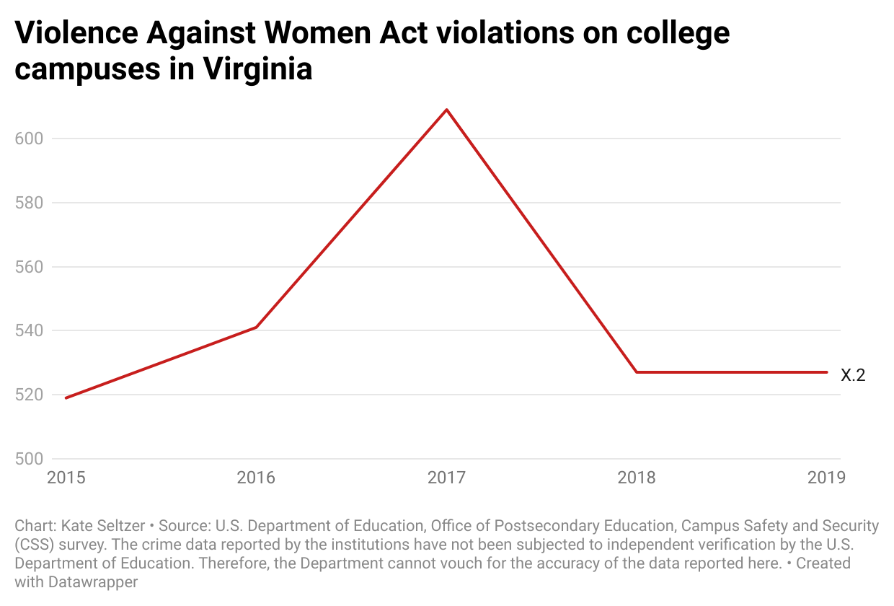

**Warning: this article will allude to rape and sexual harassment.
I don’t remember who first told me as a freshman in college not to go to rugby parties. It might have been the senior peer mentor for my freshman seminar, or an RA, or the president of Young Democrats, or someone else entirely. But since that first time, I kept hearing it. It was drilled into my brain, by women I looked up to, that the men’s rugby team represented something sinister, predatory – a danger to be avoided whenever possible.
My friends remember heame thing. They were warned by student programming leaders the summer before college or by students with older siblings on campus. None of us could tell you specifics about people who went to rugby parties and had something horrible happen to them, but the culture of rumors about the team from friends and friends of friends permeated the campus. My parents, who attended UMW (then Mary Washington College) more than 30 years ago, remember similar rumors surrounding the team even then.
That such a toxic culture should be permitted to exist as a campus-wide open secret for so long is not entirely surprising; my childhood best friend, who attends William & Mary, speaks casually about a notoriously “rapey” frat on campus. But UMW does not have officially recognized Greek life, a selling point for me and others who wanted to have a social life without the tribalism, excessive drinking and sexism tied to fraternities and sororities. Still, the parallels between warnings about particular rapey frats and those about UMW’s rugby team were undeniable. It seemed to me that the rugby team had neatly and effectively stepped up to fill the role of toxic masculinity on a campus without the traditional frat life.
I didn’t know as a freshman in the fall of 2017 that I was entering the school just two and a half years after the Feminists United sued the school for failing to protect them from vicious harassment. I didn’t know then that the men’s rugby team had been suspended the same year for publicly glorifying rape. I didn’t know then how many students had defended the rugby team and overlooked the concerns of Feminists United. I only filled in the gaps through my position as an editor at the campus newspaper, The Blue & Gray Press.
But most students still don’t know. And I want them to know too. I want them to make their own determinations about whether the school has done enough to overcome these dark events.
Chapter One
Back in 2014, when many college campuses around the country were in the midst of reckoning with their cultures of campus sexual assault, UMW felt like it was a world apart-- a small liberal arts state school with a student population that had actively chosen not to go somewhere with football or raucous parties. But this was the year when at Columbia University in New York City, Emma Sulkowicz garnered attention for carrying a 150 pound mattress around campus in protest of their school’s decision not to suspend a classmate who they reported assaulted them. This was also when Rolling Stone published its infamous (and retracted) article “A Rape on Campus,” which detailed a purported gang rape at the University of Virginia. UMW has historically been considered UVA’s sister school, since it housed women before either school was co-ed.
While other schools were reconsidering their flawed relationship with Greek life, UMW was just considering beginning one. Though there were a handful of fraternities and sororities at UMW, they were not acknowledged in any official capacity by the school. The Student Government Association had prepared a motion to change that, which prompted a schoolwide debate and a town hall discussion. For two weeks it seemed the school was getting close to having officially-sanctioned Greek life for the first time. When Feminists United spoke out about the plan, saying that it would contribute to problems of sexual assault, some on campus supported them. But others took to social media to bully them.
The local newspaper, the Free Lance-Star reported that members had been called “radical feminists” who “hate men” on social media. Students took to the anonymous and now defunct messaging app Yik Yak to voice their anger towards the club. In the coming months, the harassment would get much worse – anonymous harassers would move from comparatively tame language in reference to specific views on Greek life, to targeted rape and murder threats. As the tension mounted, many still considered the feminist message to be overblown.
Ultimately, the Rolling Stone article’s release quashed those discussions completely. Then-university president Rick Hurley called a halt to the conversation, citing the article as a primary concern: Mary Washington would remain a Greek-free campus. In response, then-president of Feminists United wrote in an article published in the campus newspaper: “I appreciate President Hurley’s commitment to addressing sexual assault on campus and I would urge the UMW community to join together to confront this issue.”
At the same time UMW was debating whether to allow Greek life, the men’s rugby team was engaging in misogynistic chants that would later surface and give activists on the campus evidence that a rape culture exists at the school even though there are no fraternities. According to the Free Lance-Star, a student activist named Zacariah Kronenber, who was forced to leave a party attended by rugby players in November, had sent the school audio of a sexist chant they had been singing there. The school didn’t respond publicly for several weeks.
Then, on March 18, 2015, Hurley released an email to the school body, announcing cryptically that he was “aware of recent situations in which our own students (groups and individuals) have engaged in behaviors that [he found] repugnant and highly offensive to members of our community.” He also wrote that he had directed a task force to “deal with many of these issues directly” and looked forward to their recommendations. The email called for cultural change, but distanced itself from administrative responsibility: “ultimately, though, much of this comes down to individual choices.” The unclear message prompted broad confusion, and in response, students posted the audio on Facebook.
“Finally found a whore.
She was right and dead.
Well goddamn son of a bitch we're gonna get it in!
Finally got it in (Finally got it in!)
Wiggle it all about (Wiggle it all about!)
Goddamn son of a bitch I couldn't get it out.”
Chapter Two
Students found themselves wondering for the first time – is it possible the same toxic culture that exists at large schools with fraternities and football also affects our smaller, mostly female campus? The school, at this point, could no longer ignore evidence that there was at least some truth to the rumors that had circled the rugby team for years. Feminists United offered support for survivors who heard the audio in a post on their Facebook page: “Hey everybody! We just wanted to reach out and let you all know that if you see this disturbing chant by the Men's Rugby Team and feel triggered in any way, shape, or form please know that there are many resources available to you for help.”
The next day, on March 19, Hurley sent a follow-up message: “Understanding that the offensive chant is antithetical to UMW values, and will not be tolerated, the University pursued action against the men’s rugby club... After an appeal by the accused, the disciplinary process concluded on March 18 with this ruling: All rugby club activities have been suspended indefinitely.”
The email also said that all members of the men’s rugby team would be required to attend sexual harassment training. Following this announcement, things immediately got worse for Feminists United, as students blamed the club for the suspension of the school’s only Division 1 team. As the harassment grew more pointed and more threatening, the Feminists United Facebook page reflected the club’s growing sense of fear. “In light of recent sanctions brought against the men's rugby team and the dialogue stemming from President Hurley's announcement, Feminists United would like to make it clear that we do not condone any violent or harassing behaviors,” read a post from March 20.
Then, on March 23: “To all of our members, if at any time you feel unsafe or threatened, or just need someone to talk or vent to, please feel free to reach out... If any of you receives any threats, however, please also make sure to contact the UMW police!” And on March 25: “To our members, we are aware of the threatening activity on yik yak and would like to remind you that there are resources available to you... Our meeting is still on for tonight at 8pm in Monroe 111 and [UMW Police] Chief Hall will be present to ensure the safety of our members.”
Anonymous users threatened and harassed Feminist United Club members with more than 700 messages over YikYak. | The New York Times
The Yik Yak messages – more than 700 in total – became increasingly graphic and violent and named specific members, going so far as to post the schedule of Feminists United president Paige McKinsey. “Gonna tie these feminists to the radiator and g[rape] them,” the anonymous harassers wrote. The comment was a direct quote from a sketch by the comedy group Whitest Kids U Know. The word grape was used to replace rape. “Dandy’s about to kill a bitch or two” and “Can we euthanize whoever caused this bullshit?” read some other comments. UMW police officers accompanied her to both Feminists United and Young Democrats meetings.
Allyson Poska, a history professor and the first chair of the Women and Gender Studies Department, described watching the events unfold as someone who knew the officers in an educational setting. “It was horrific,” she said. “The women of Feminists United were both terrified that their lives were being threatened and emboldened to take action to protect themselves and others. Fortunately, the women who were the subject of most of the threats and harassment provided a strong support system for one another. The University administration was completely unwilling to take action, leading to more fear and confusion.”
Chapter Three
In April, the school was upended in the wake of a horrific tragedy. One of the Feminists United executive board members named in the messages was Grace Mann, an openly gay junior who also served in the Student Senate and on the school’s task force on sexual assault. On April 17 of 2015, she was murdered by her roommate, Steven Vander Briel, a 30 year old senior and former rugby player. Students couldn’t help but make the connection between the events, despite urges from Feminists United and from Mann’s family not to.
On May 8, Feminists United co-hosted with Feminist Majority Foundation and civil rights lawyer Debra Katz a press conference detailing the Title IX complaint they intended to file against the school. Members of Feminists United said they made this decision weeks prior to Grace’s death.
In response to the press conference, President Hurley sent a letter to Eleanor Smeal, then-president of Feminist Majority Foundation, the national organization backing Feminists United Club in their lawsuit. He also sent the letter, which slammed the Title IX complaint as reckless and irresponsible, to media outlets and to the entire student body. In the letter, Hurley downplayed the severity of the harassment, defended the school’s inaction in attempting to stop the YikYak posts or track down the harassers, and accused Feminists United of irresponsibly linking Grace Mann’s death and the YikYak harassment.
“Some of the Yik Yak comments were certainly offensive and appear alarming in isolation, but must be placed in context,” Hurley wrote, arguing that they were quoting a comedy group and the television show “American Horror Story: Freak Show.” The Feminists United club rejected this argument in a similarly charged public letter to Hurley, saying rape jokes were unacceptable, and the threats, regardless of their origin, made members fear for their safety.
Grace Mann, an exutive board member of Feminists United, was murdered by her roommate in the spring of 2015.|The Free Lance-Star
The letter also said they never alleged Grace’s death was caused by the threats she received – tweets from the club dated May 8 corroborate that they urged students to avoid such speculation. The club also took issue with Hurley’s assertion that Grace never feared for her safety. “We know from our discussions with Grace and with faculty members that Grace did in fact repeatedly express fear for her safety,” the letter reads. “Grace told us at our weekly [executive board] meetings on multiple occasions that she was afraid, nervous, and worried for her well-being. She took precautions not to walk around the campus alone because of her concern for her physical safety. Grace may not have filed a formal complaint, but she was fully supportive of the decision of Feminists United to file a Title IX complaint, and was thinking about being a complainant herself.”
After an initial dismissal from a federal trial court, in December of 2018, the Fourth Circuit Court of Appeals wound up siding with Feminists United and sent the case back to the lower court. “I do recall we were very, very pleased with the outcome, and I think it certainly has implications for all schools at all levels to think about,” said Carolyn Wheeler, a lawyer involved with the representation of Feminists United. “We said, and the Fourth Circuit agreed, that you couldn't throw a case like this out as a matter of law, agreeing that there wouldn't be anything the school could do because of First Amendment concerns, that it would take a more nuanced approach than that. I think that for schools everywhere, they need to treat allegations of online harassment as seriously as in person harassment and figure out ways that they can address it and not just give up.”
Chapter Four
The school, panicked over the events of the year, did what many were urging: to do anything to show they had a handle on this complicated situation. The Office of Title IX introduced a mandatory online sexual violence prevention program for student athletes, coaches and staff. The school also hired a Title IX victim advocate in 2018, though at some point since that position seems to have been eliminated from the Office of TItle IX website. Other education efforts about sexual harassment and assault include watching a video that compares consent in sexual situations to making someone a cup of tea, at freshman orientation.
“If you say ‘hey would you like a cup of tea’ and they’re like ‘ah, you know I’m not really sure,’ then you can make them a cup of tea or not, but be aware that they might not drink it. And if they don’t drink it then, and this is an important bit, don’t make them drink it. Just because you made it doesn’t mean you’re entitled to watch them drink it.”
Hurley retired from UMW in May of 2016, a decision he said had been in the works for several years. When I reported on the appellate court decision in 2018, I asked the new university president Troy Paino, who arrived at UMW in the summer of 2016, about an op-ed for the school newspaper Paige McKinsey wrote: “Why the University of Mary Washington Isn’t a ‘Feminist-Friendly’ Campus.” I was hoping to get at whether he thought that had changed, if in the past years UMW had become more feminist-friendly, but he shut me down. “I’m not going to comment on her editorial or what the circumstances were back in 2015,” he said. “That was before I was here, and I think it would be unfair for everyone involved for me to describe.” In addition to the measures above, Paino established a standing committee on sexual assault, which recommended the hiring of a full time sexual assault prevention specialist, a full time victim advocate, and a full time Title IX Clery police officer.
The lawsuit continued through May of 2019, when, a court docket reports, the case was dismissed at the request of all parties involved. The terms of the settlement are strictly confidential. But the complaint alleged that the university had reneged its responsibility because it never sought to identify the students who posted the offending messages on Yik Yak, even though some of those messages were posted through the use of UMW’s network. The university didn’t ask Yik Yak to identify those users either. Yik Yak has since shut down. Most students at the university currently never even heard about the case’s outcome.
Feminists United announced a Title IX complaint and eventually a lawsuit against UMW. | The Blue & Gray Press
Members of the rugby team today since then have tried to move past the events of 2015. Nathan Neri joined the team in the fall of his junior year in 2016, a year and a half after men’s rugby was suspended. He was warned early in his college career about rugby parties (“they were like ‘don’t go to rugby parties, they're idiots,’”), but he tried to approach joining the team with an open mind. That year, Neri says the rugby team spoke openly about what happened with each other, and they made it clear they wanted to overcome everyone's preconceived notions about them. He ended up staying for two years and having a positive experience.
“What I noticed is that that team started to become more inclusive, like there were people sitting at the lunch table that were not part of the team,” Neri said.
He said he found the male bonding that occurred through rugby to be formative for him. There was an intensity to being a member of rugby, he said. “People lose teeth, people break arms,” he said. His finger is still broken from his rugby days. The athletic experience helped the team develop a close bond, one that was different from fraternity life – after all, on a team, there was no payment for brotherhood. There was definitely a party scene, but it was mostly for team members who were too young to get into bars, he said. Upperclassmen tended to go off-campus for their fun.
Alex Mortimer, an exchange student from Reading, England (and my friend and former housemate) played on the team during his year at UMW, from 2018 to 2019. He described a similar nightlife experience. The thing about rugby parties during this era, he said, was that they didn’t fully exist. “We would get drunk as lads,” he said. “The only time you could probably call it a party was after games, when we’d invite other mates and girls, usually people’s girlfriends. As soon as it becomes half 10, 11, we’d kick everyone out and go downtown.”
He said he was aware of the chant when he joined, but his experience was so vastly different from anything resembling the 2015 saga of harassment that he couldn’t really wrap his head around it happening in the first place. “The head coach when I left, an ex military bloke, would not stand for any shit like that. He was scary, you fucked around and gave rugby a bad name, you’d be out the team. This stuff in 2015 – the rugby team was awful in the things that they’d done.”
Other players are less open than Neri and Mortimer. When I reached out to players on a 2016 roster who, based on Facebook graduation dates, would have been on the team, or at least at UMW, at the time of the suspension, most didn’t respond. The two that did referred me to UMW’s athletic director and touted, nearly identically, the team’s commitment to charity work. “The team has always done its best to represent the school both on and off the field, from winning the National Championship to volunteering at Shiloh Baptist Church's soup kitchen and Clothing Drives for the Micah Shelter. I don’t really have much else to say,” wrote one player. “I can definitely tell you that the team then (and now) are committed to leading the university in volunteer hours and good works both on the field and off,” said the other.
When I asked to hear more about their charity work and for their opinions on rugby’s past, they stopped responding. I can’t say for certain that there was an agreement to keep silent, by them or the many others I tried to reach, I just know that everyone with any firsthand memory of what happened five years ago chose to remain in the shadows. Similarly, a friend who played on the team in the past two years, who I was sure would talk about his experiences, said he was uncomfortable doing so.
Rugby players say their team culture has improved, but other students aren't so sure. | The Daily Mail
And yet, whispers about rugby and its rotten reputation continue to weigh heavy, fog-like, on campus. Students say they still hear comments from members of the team that hint at misogyny, homophobia and racism. “I learned really quick to keep my distance from certain members and take caution,” said one student. “I heard of a lot of instances from acquaintances and friends of their members sexually assaulting girls that went to the parties, people being drugged at the parties, and even racial slurs casually being used amongst the team as a joke. I have met some really nice members of the team that are actually caring individuals. But at the end of the day I have met a couple of misogynistic, sexist, and racist ones as well.”
One student, who graduated in the spring of 2020, described the rugby team as “not necessarily threatening one on one… But I would never go to a party of theirs drunk.” Students described individual players as sweet: several were genuinely some of the nicest people on campus. One remembers a player taking his mom to Brock’s, a grimey local bar frequented by students, to everyone’s delight. On the other hand, there are some guys on the team with “really shitty attitudes toward women” and who “heavily thrive on toxic masculinity” and “typical ‘frat guy’ behaviors,” various students report.
“I have had nice experiences and am friends with a few of them but haven’t been around them as a big group. I also know that there are some guys on the team with really shitty attitudes towards women, but I don’t know enough of them to consider it a ‘rugby problem,’” another student said.
No students I interviewed had an example of an assault that occurred at a rugby party or any chants they have heard. One student described a situation when members of the rugby team got her friend too drunk, to the point where she blacked out, and when the friend came to, the guy who’d brought her to the party had left, and “she was with a bunch of random guys.” I was unable to get in touch with that student. But whether warranted or not, there’s a very real fear of the team.
Chapter Five: An Unsatisfying Conclusion
It’s hard to tell what’s true. I’m inclined to believe Alex, and Sam Cobb, a former editor of the campus paper and rugby player, who also said he had never witnessed anything like the events of 2015. It’s difficult for me to imagine that people who I’ve spent time with, and who I know and respect, are capable of the kind of blatant sexism and promotion of rape culture that was so deeply ingrained in the team’s culture five years ago. On the other hand, I also understand the fears of women I speak to. Maybe the warnings are less about specific members of the rugby team, and more about the danger groups of men – particularly groups of men who play violent sports and consume copious amounts of alcohol – can pose.
But I started to think that maybe the reason for all this confusion is that we don’t talk about it. These conversations died off as students involved at the time graduated, and future generations of Eagles were never given the opportunity to make the judgement themselves. Hurley’s public conversations about rape culture on campus certainly seemed less than productive, and Paino wasn’t willing to talk about events before his time. That’s fair enough, but what it means is there never was a meaningful conversation about the events of 2015. In talking with my friends about this article, I found myself telling the whole, complicated story of the rugby team and the advocacy (and harassment) of Feminists United from the beginning, again and again. No one knew. The institutional memory that might have allowed for real, meaningful change has faded.
Poska says that the promised reckoning with campus harassment and assault never happened. “There was no cultural reckoning. Even at the time, most students did not know that anything serious was happening until Grace Mann was murdered in April 2015. Only then, and it was the last week of the semester, was the University forced to address issues of harassment and violence against women on campus.” She worries about how, and if, the school can heal. “I don’t have any evidence that perceptions of feminism have changed and I am quite concerned that, although it was only 5 years ago, most students know nothing of the harassment via Yik Yak, the Feminist United lawsuit, or Grace Mann’s murder.”
“Their strength and bravery will hopefully mean that no one else has to suffer as they did.”
As I was reporting on this story, my dad happened upon a Facebook exchange with a former rugby player who played on the men’s team his freshman year at Mary Washington from 1991 to 1992 that seemed relevant. In it, Micah Dalton posted about how if you had a daughter, you should be critical of Trump. A friend of his in the comments asked if he hadn’t participated in misogynistic rugby chants while at Mary Washington, hinting at hypocrisy in the criticism. In our interview, he seemed hesitant, almost defensive. His response encapsulated how I felt about Mary Washington’s – it was almost a reckoning with what happened, but it doesn’t quite get there.
“I know they were unpleasant, [but no more] unpleasant than I can remember any other college joker saying... I’m certainly not trying to excuse the inappropriateness of those chants, but I never observed any physical mistreatment of men or women.”